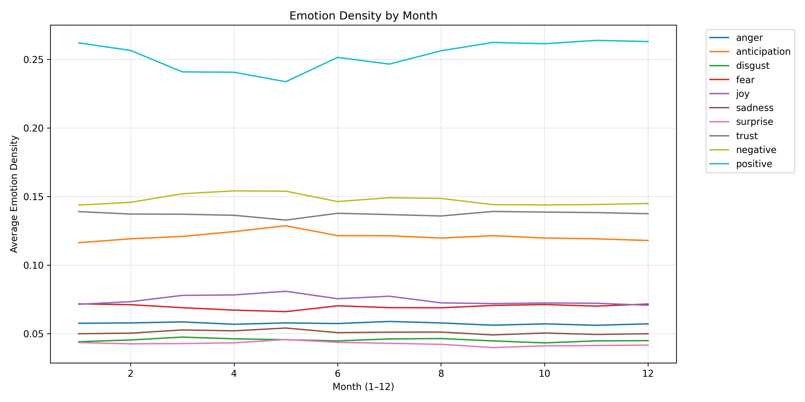
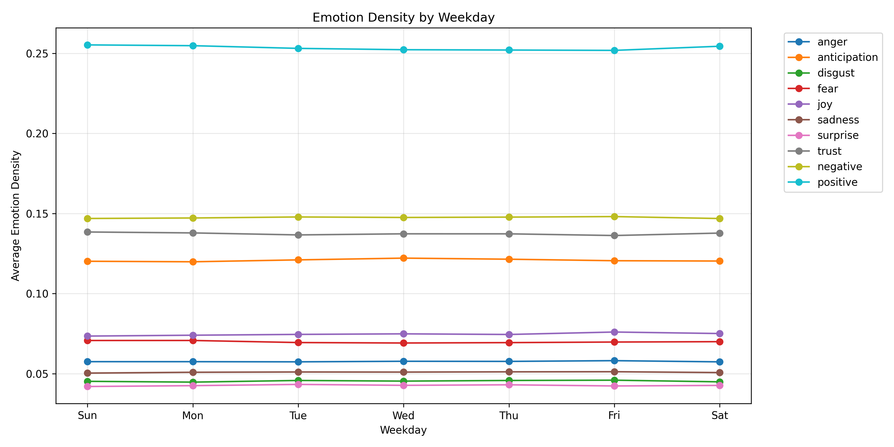
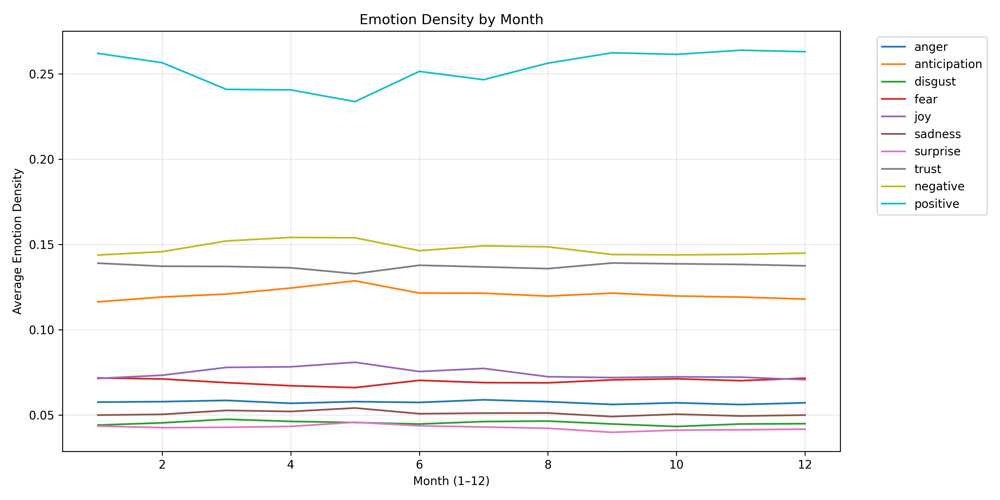
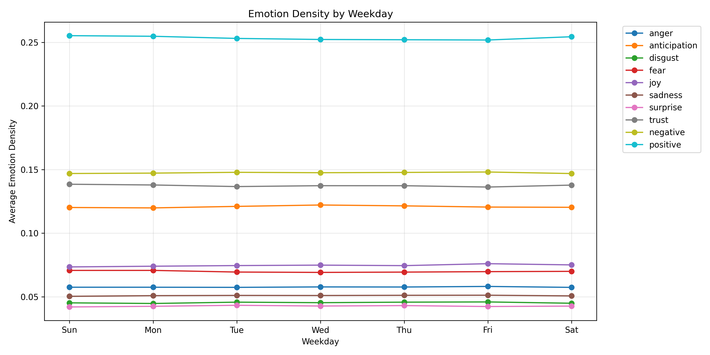
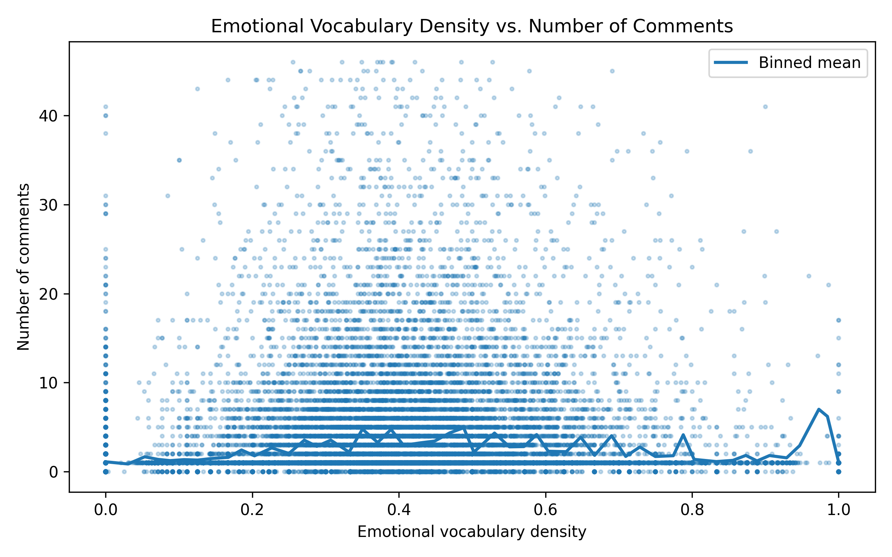
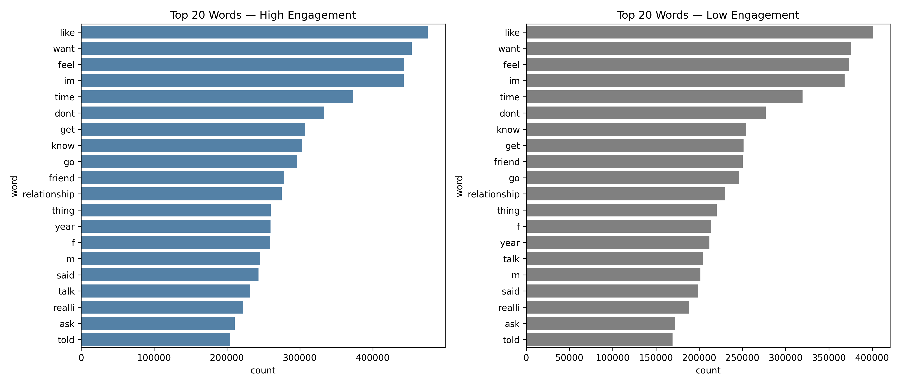
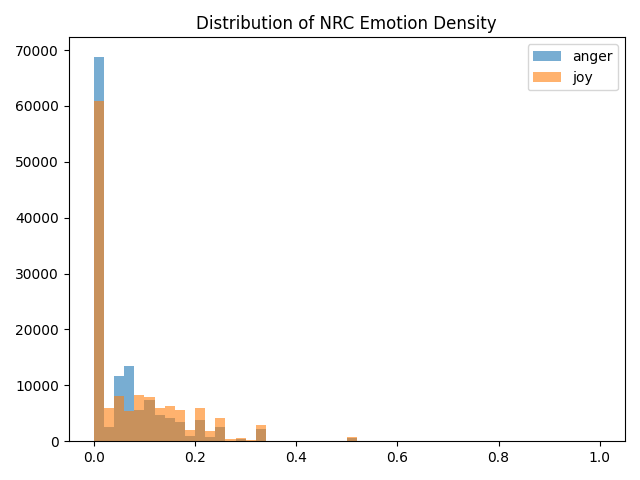

Natural Language Processing
Sentiment Analysis and Topic Modeling
This page is populated during Milestone 2 (Week 5) with NLP findings.
Overview
This page presents NLP analysis addressing [3-4] NLP business questions through sentiment analysis, topic modeling, and text mining.
Business Question 1: How do emotional tones in relationship discussions vary across temporal patterns?
Question: How do emotional tones in Reddit relationship discussions change across different temporal patterns (hour of day, weekday, and month), and what do these shifts reveal about user commenting behavior and community sentiment dynamics?
Findings
  
 
Key Insights:
- Negative emotions (especially fear and anger) are slightly elevated during late-night hours, suggesting that emotionally intense posts tend to occur after midnight.
- Positive emotions increase during afternoon and evening periods, indicating that daytime discussions are more constructive and solution-oriented.
- Sundays exhibit higher negative and fear-related emotion levels, while Wednesdays show the strongest positive sentiment, reflecting mid-week stability and weekend emotional volatility.
- Positive emotions peak between March and May, accompanied by lower negative sentiment, suggesting a seasonal uplift in emotional tone during the spring months.
Business Question 2: : What are the most common themes from topic modeling (LDA or BERTopic) in relationship stories (e.g., trust issues, infidelity, family pressure)?
Question: Based on topic modeling results, what are the most common patterns or themes people discuss in relationship stories (e.g., trust issues, infidelity, emotional disconnect, family interference)?
Findings
Key Insights:
Here are the 15 identified topics from the LDA analysis, each described by their most representative keywords. These keywords suggest recurring themes and concerns in relationship-related texts:
Topic 0 – confusion, uncertainty, hesitation in dating
dont know, guard, maybe, mystery, what, keep, interestTopic 1 – texting dynamics, ghosting, interest loss
follow, wait, response, start, message, lose, effortTopic 2 – rejection, desire, emotional struggle
thought, want, reject, life, hard, acceptTopic 3 – friendzone, attraction, assumptions
safe, assume, never attract, met, friend, situationTopic 4 – sexual pressure, hesitation, asking consent
ask, stop, think, want, great, sexTopic 5 – loyalty, lying, effort in relationship
loyal, never lie, stay, effort, communicateTopic 6 – emotional manipulation, apology cycles
manipul, apologize, hurt, change, promiseTopic 7 – external opinions, self-esteem, judgment
everyon, opinion, wrong, blame, betterTopic 8 – infidelity, trust issues, jealousy
cheat, talk, jealous, faith, betrayTopic 9 – self-worth, validation, loneliness
worth, lonely, need, validate, enoughTopic 10 – sexual confusion, boundaries
confus, stop, sex, unsure, changTopic 11 – family interference, privacy
mom, doctor, behind, back, healthTopic 12 – ghosting, online dating, lack of closure
match, multiple, date, disappear, effortTopic 13 – emotional dependence, clinginess, abandonment
need, constant, reassure, leftTopic 14 – future planning, commitment anxiety
plan, future, scare, commit, big step
Business Question 3: Do writing style and emotional vocabulary influence community engagement?
Question: To what extent do writing-style features (post length, emotional vocabulary, question usage, and readability) predict community engagement measured by the number of comments?
Findings

Key Insights:
- Emotional vocabulary density shows very weak relationship with comment count (corr ≈ 0.014), suggesting that using more emotional words does not meaningfully increase engagement.
- Posts with more tokens receive slightly more comments (corr ≈ 0.087), making post length the strongest predictor among the examined features.
- Question marks correlate marginally with engagement (corr ≈ 0.081), indicating that asking questions may offer a slight boost to response activity.
- Readability score shows insignificant correlation with engagement (corr ≈ 0.017), implying that writing complexity does not shape community response.
Business Question 4: What early linguistic markers can signal whether a post will receive high engagement?
Question: Can we identify specific linguistic patterns—such as word choice, emotional tone, or message structure—that reliably predict whether a Reddit relationship post will receive high community engagement (comments)?
Findings

Key Insights:
- High- and low-engagement posts share similar core vocabulary, meaning engagement is not driven by unique or rare keywords.
- But high-engagement posts use emotional-state verbs (“feel”, “want”, “dont”, “know”) more frequently, indicating stronger emotional disclosure.
- They also contain more question marks, reflecting uncertainty, problem-solving needs, and explicit invitations for advice.
- Overall, posts that read as vulnerable, emotionally expressive, and actively seeking guidance consistently draw more comments.
Extended Sentiment Analysis: Anger vs. Joy
Overall Sentiment Distribution

Using the NRC emotion lexicon, we computed emotion density for each Reddit comment—defined as the proportion of tokens associated with a given emotion. The histogram shows that both anger and joy densities are highly concentrated near zero, with long right-tailed distributions. This pattern indicates that most comments contain very few explicit emotional keywords, while a smaller subset exhibits substantially higher emotional intensity. Joy displays a broader spread than anger, suggesting that positive emotional expressions appear more frequently and with greater variability across the dataset. This overall distribution provides the baseline context for examining temporal and subgroup variations in emotional tone.
Sentiment by Subreddit
Our dataset is drawn exclusively from the subreddit r/relationship_advice, meaning all posts come from a single community. As a result, sentiment cannot be compared across multiple subreddits, and subreddit-level variation is not applicable in this context. Instead, our sentiment analysis focuses on within-subreddit patterns—specifically how emotional expression varies across time and across individual posts. This ensures that all observed sentiment differences are driven by user behavior rather than differences in community norms or discussion environments.
Summary
Answers to NLP Business Questions
- How do emotional tones in relationship discussions vary across temporal patterns?: Emotional tones show consistent temporal structure: negative emotions (especially fear and anger) increase modestly during late-night hours, while positive emotions rise during afternoon and evening periods. Sundays exhibit higher negative sentiment, whereas Wednesdays show the strongest positive tone. Positive emotions also peak between March and May, suggesting a seasonal uplift in emotional expression during the spring months.
- What are the most common themes from topic modeling (LDA or BERTopic) in relationship stories (e.g., trust issues, infidelity, family pressure)?: LDA topic modeling revealed several dominant themes in relationship stories, with the most common centered around infidelity and trust issues, communication problems (texting, ghosting), emotional insecurity, and modern dating challenges. These themes emerged naturally from keyword clusters and represent the recurring concerns that drive users to seek advice.
- Do writing style and emotional vocabulary influence community engagement?: Emotional vocabulary and writing-style features show only weak associations with engagement, indicating that comment volume is driven far more by content than by sentiment or stylistic choices.
- What early linguistic markers signal high engagement?: Early linguistic markers of high engagement are subtle rather than structural. High- and low-engagement posts have nearly identical length and lexical diversity, but high-engagement content shows a modestly higher use of question marks and slightly stronger prevalence of emotional-state verbs (“feel”, “want”, “dont”, “know”), indicating a greater tendency toward explicit uncertainty, emotional articulation, and invitation for interaction rather than differences in overall textual complexity.
Business Implications
Peak negative emotion periods (late night, Sundays) indicate when users are most likely to seek urgent or emotionally charged support. Platforms or moderators could allocate resources to these time windows to improve response quality and community safety.
Dominant themes such as infidelity, trust breakdown, communication failure, and insecurity highlight core user pain points. These insights can guide targeted content strategies, automated FAQ suggestions, or personalized support tools addressing high-frequency relationship stressors.
Weak influence of writing style on engagement suggests that platform engagement is content-driven rather than presentation-driven. This reduces emphasis on linguistic coaching and instead supports surfacing posts with substantive relational dilemmas.
Early indicators of high engagement—greater use of emotional-state verbs and question-oriented phrasing—suggest opportunities for features that detect posts requiring community attention. Automated triage or “potential high-impact post” flags could help moderators or support agents prioritize emotionally complex cases.
Overall, these findings reveal predictable emotional rhythms, recurring thematic concerns, and subtle linguistic signals that can inform community management, content recommendation, and user-support strategies for relationship-focused online platforms.
All NLP code is in code/nlp/ directory.